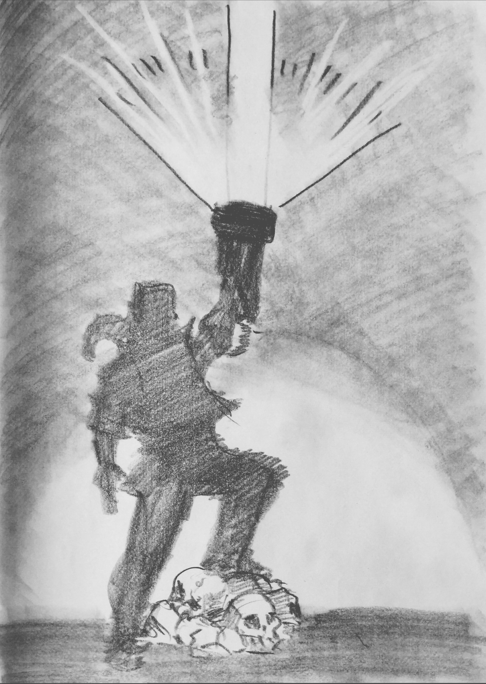

Kutaro
Kutaro ist die Wiedergeburt von Kurt der Anderen3.
Kutaro wächst bei seiner Mutter (und natürlich ohne leiblichen Vater) in Dailandia auf. Seine Mutter wird als Hexe verdächtigt und lebt in relativer Isolation. Kutaro kann bei den Kindern anschließen, ist aber nie richtig Teil der Gemeinschaft.
Kutaro erweckt die Monster auf Dailandia
Kutaro und seine Gefährten durchstreifen den Wald westlich vom Dorf der Holzfäller. Sie stoßen auf die Ruine von Zacharias und den verborgenen, durch Dai eingekapselten Kometenbrocken. Die Barriere wird mürber und der Komet ruft nach einem Erwecker.
Eine körperlose Stimme spricht aus den Ruinen zu Kutaro und lockt ihn zu einem Zipfel des Kometen. Kutaros Berührung macht die Barriere noch mürber. Seinen Gefährten wird vom Portal die Lebensenergie entrissen, sodass es sich schließlich öffnen kann.
Jahrhundertelang gestaute Seelen entweichen explosiv und zerreißen den Kometen in 7 Teile. Sie bringen Monster in die Tierwelt nach Dailandia und verstreuen aufgeladene aber als Portal untaugliche Splitter des Kometen über das Land.
Das Tor zur Unterwelt öffnet sich: von Dai verborgene Monster, entstanden in den ersten Jahren nach Einschlag des Kometen, entpuppen sich als mittlerweile untote Menschen und verweste Tiermutationen. Zacharias kehrt zurück.
Kutaro der Befreier
Kutaro Erinnerungen an sein früheres Leben umfassen das Wissen um den Schusswaffengebrauch. Kometensplitter dienen ihm als Munitionsgrundlage. Die Waffen sind außerordentlich Effektiv bei Monstern.
Dai, dessen Barriere aufgebrochen ist und der wieder erstarken kann, führt Kutaro zum Kloster, wo er einen in innerer Ki-Kontrolle versierten Kampfgefährten findet.
Kutaro sucht die 7 großen Splitter und zerstört sie mithilfe des Mönches.
Auf dem Weg gelangt er in Besitz der Rüstung des Avatars und kann seine Schusswaffe mit zunehmender Erfahrung verbessern. Je mächtiger seine Waffe wird, je mehr Kometenmaterial sie ansammelt, desto mehr erstarkt das Bewusstsein des Kometen und übt Einfluss auf ihn aus.

Die finale Form seiner Waffe, mit der er gegen den Ghoulfürsten antreten könnte, kann nur als Waffenarm funktionieren. Er muss einen Teil seines Körpers mit dem Geschütz verbinden und wählt dazu seinen linken Arm. Die Verschmelzung beeinträchtigt seinen Charakter umso mehr. Er verfällt dem Kometen und wird wahnsinnig. Im Kampf tötet er seinen Gefährten. Das Trauma bringt ihn für einige Zeit aus dem Wahnsinn zurück.
Kutaro vernichtet Zacharias daraufhin im Kampf und kann den Kometen der Insel soweit neutralisieren, dass keine Monster mehr Zugang zur bekannten Welt finden. Er verliert seinen linken Arm an die Waffe, wird von einigen Menschen über die Verstümmelung hinweg gesund gepflegt, und verbirgt das Geschütz auf einer kleinen Dailandia vorgelagerten Insel. Dort lebt er vor anderen Menschen versteckt.
Tod Kutaros
Kutaro sucht nach einem Weg, das Material der Waffe zu reinigen und vom Bewusstsein des Kometen zu befreien. Im engen Zusammenleben mit der Waffe und durch die lange Isolation wird er verrückt, allerdings nicht mehr für andere Menschen gefährlich.
Seine Aufzeichnungen umfassen Erinnerungen an sein früheres Leben. Baupläne für kleinere Schusswaffen und Ideen zur Reinigung der besessenen Waffe finden sich in einigen handgeschriebenen Bänden versammelt.
Er stirbt allein am Schreibtisch in der Hütte auf der einsamen Insel.
{kind=link}
{kind=link}